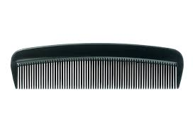
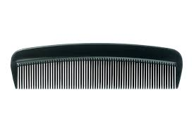
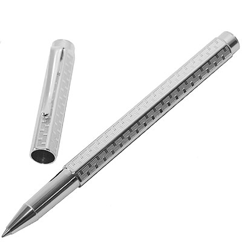
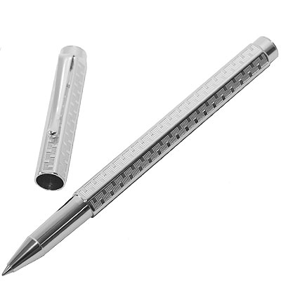
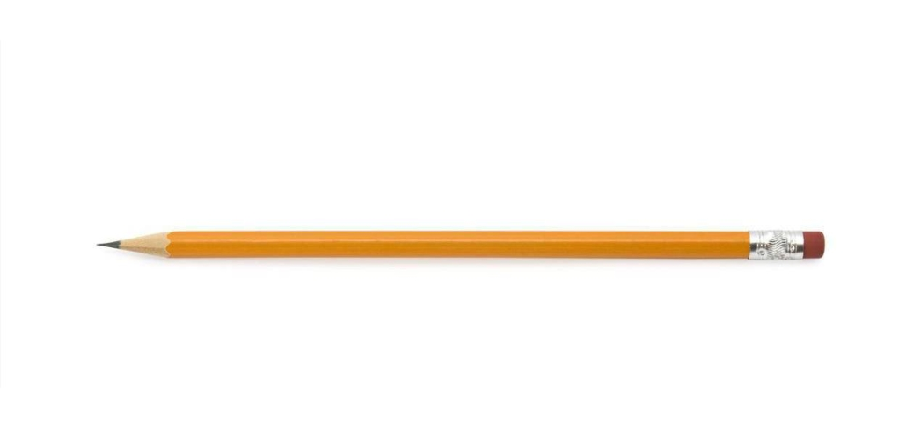
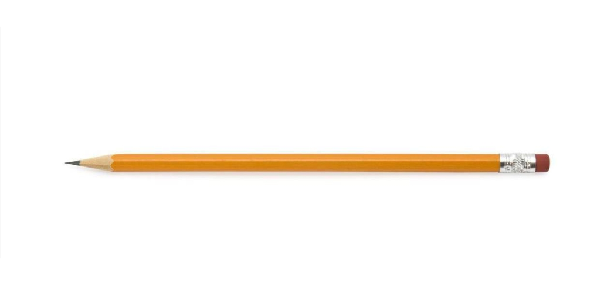

Test Image 1
Mobilenet Result :- Airliner
Google Lens Result :- Indigo Aeroplane
Mobilenet Result :- Airliner
Google Lens Result :- Indigo Aeroplane
Google Lens Is More Accurate**
Test Image 2
Mobilenet Result :- wallet, billfold, notecase, pocketbook
Google Lens Result :- Eastern Rosella
Mobilenet Result :- wallet, billfold, notecase, pocketbook
Google Lens Result :- Eastern Rosella
Google Lens Is More Accurate
Test Image 3

Mobilenet Result :- water bottle
Google Lens Result :- Plastic Bottle
Mobilenet Result :- water bottle
Google Lens Result :- Plastic Bottle
Both Are Accurate*
Test Image 4

Mobilenet Result :- abacus
Google Lens Result :- International Chess Board
Mobilenet Result :- abacus
Google Lens Result :- International Chess Board
Google Lens Is More Accurate
Test Image 5

Mobilenet Result :- Hair Slide
Google Lens Result :- Plastic Comb

Mobilenet Result :- Hair Slide
Google Lens Result :- Plastic Comb
Google Lens Is More Accurate
Test Image 6

Mobilenet Result :- tiger, Panthera tigris
Google Lens Result :- Cape Lion
Mobilenet Result :- tiger, Panthera tigris
Google Lens Result :- Cape Lion
Google Lens Is More Accurate
Test Image 7

Mobilenet Result :- ballpoint, ballpoint pen, ballpen, Biro
Google Lens Result :- Caran d'Ache Ecridor(Rollerball pen)

Mobilenet Result :- ballpoint, ballpoint pen, ballpen, Biro
Google Lens Result :- Caran d'Ache Ecridor(Rollerball pen)
Google Lens Is More Accurate**
Test Image 8

Mobilenet Result :- rubber eraser, rubber, pencil eraser
Google Lens Result :- Pencil Isolated

Mobilenet Result :- rubber eraser, rubber, pencil eraser
Google Lens Result :- Pencil Isolated
MobileNet Is More Accurate
Test Image 9

Mobilenet Result :- safety pin
Google Lens Result :- Team EY
Mobilenet Result :- safety pin
Google Lens Result :- Team EY
Google Lens Is More Accurate***
Test Image 10
Mobilenet Result :- container ship, containership, container vessel
Google Lens Result :- Not Showing Proper Text as Result But is Showing Railways in Most of the Results.
Mobilenet Result :- container ship, containership, container vessel
Google Lens Result :- Not Showing Proper Text as Result But is Showing Railways in Most of the Results.
MobileNet Is More Accurate
Legend:-
* = One Is More Accurate Than The Other But By a Very Slight Margin
** = One Is More Accurate because It Describes The Object Better
*** = One Is More Accurate Because It Doesn't Give The Best result But Is Showing Something Similar
Points :-
1 Point For Win
0.5 Points For Draw
0.75/0.25 Points If better by Only A Slight Margin
Google Lens Is More Accurate because It Scored 7/10 Points In The Case Study While MobileNet Scored 3/10. Thus It Is Clear That Google lens Is Far More Accurate